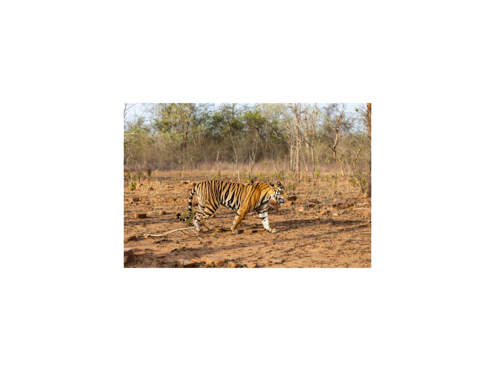

Тигровый заповедник Панна
Тигровый заповедник Мадхья-Прадеша на реке Кен
Обзор
Тигровый заповедник Панна расположен в Мадхья-Прадеше, где через леса и каньоны вьётся река Кен. Статус национального парка он получил в 1981 году, тигрового заповедника — в 1994-м; дорога от Каджурахо занимает всего около часа.
К 2009 году тигры в Панне исчезли, но успешная программа реинтродукции восстановила устойчивую популяцию. В 2020 году Панна вошла во Всемирную сеть биосферных резерватов ЮНЕСКО.
На что обратить внимание
- Бенгальские тигры (если повезёт) вдоль лесных дорог и берега реки
- Гавиалы и крокодилы в реке Кен
- Олени замбар, пятнистые олени, антилопы нильгау и лангуры
- Живописные ущелья и соседние водопады Ранех
Советы по посещению
- Встреча с тигром в дикой природе никогда не гарантирована — воспринимайте сафари как знакомство со всем лесом и его фауной.
- Бронируйте сафари заранее через гида: число джипов строго ограничено.
- Заповедник обычно закрывается на период муссонов — уточняйте даты открытия.
Почему стоит идти с частным гидом
Частный гид покажет и объяснит: бенгальские тигры (если повезёт) вдоль лесных дорог и берега реки; гавиалы и крокодилы в реке Кен. Он также поможет выбрать лучшее время визита (раннее утро).
Ещё фотографии


Рядом
Форт Гвалиор Храмы Каджурахо Храм Лакшмана Храм Чаусат Йогини в Митавали Джахангир-Махал Джахангир-Махал Водопады Ранех Дворец Джай Вилас Форт Гвалиор Джахангир-Махал
Путешествия, включающие это место
 2 дня
2 дня2 дня: Каджурахо и Панна — храмы ЮНЕСКО и тигры
Резные храмы Каджурахо и утреннее сафари за тиграми в Панне — в одной чётко спланированной поездке на выходные.
Подробнее →4 дня4 дня: Каджурахо и Варанаси — храмы, тигры и священный Ганг
Храмы Каджурахо, сафари в Панне и Ганг в Варанаси: от скульптуры до ритуала за четыре дня.
Подробнее →7 дней7 дней: храмы, Ганг и путь Будды — от Дели до Патны
Храмы, тигры, Ганг и места Будды: семь дней от Каджурахо до Патны.
Подробнее →Расскажите о датах и интересах
Я лично подготовлю программу и расчёт стоимости в течение 24 часов. Никаких групп и шаблонов.